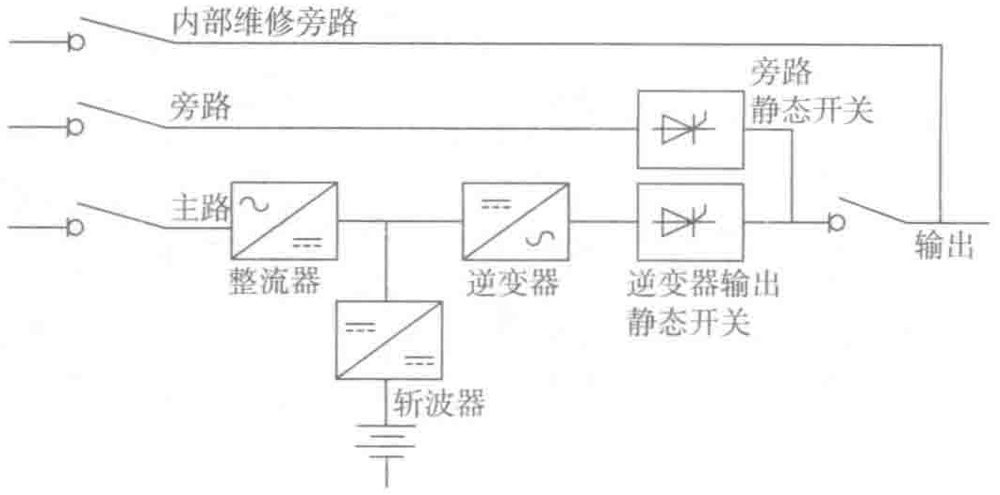
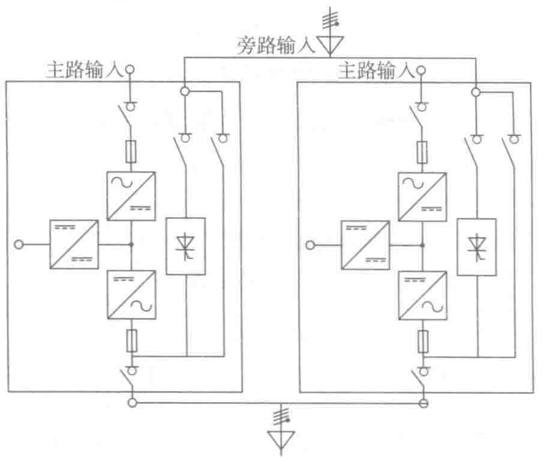

（2）标准配置2：两台1+1模块化UPS组成的主动冗余
图3-23所示是一种简单的配置方案，其中的各个UPS单元均分负载电流。
- 可用性：99.99947%，MTBF比单机UPS高4倍。
- 可维护性：在维护其中的一个单元期间，负载供电仍然受到其他单元的保护。
- 可升级性：可以并联到几个相同的UPS单元并配置一个外部维修旁路。

（3）标准配置3：模块化2+1 UPS和外置维修旁路组成的主动冗余
图3-24所示是可以升级的配置方案，额定功率可以扩容到1000kV·A以上。
- 可用性：99.99947%，MTBF比单机UPS高4倍。
- 可维护性：在维护其中的一个单元时，负载供电仍然受到其他单元的保护。
- 可升级性：能够并联多个功能相同的UPS单元，满足低成本和减小占地的要求。
（4）标准配置4：两台UPS组成串联热备份隔离冗余
图3-25所示是一种可以将不同种类和不同距离的UPS组合在一起的极其灵活的配置方案。这种配置方案还延长了后备时间。